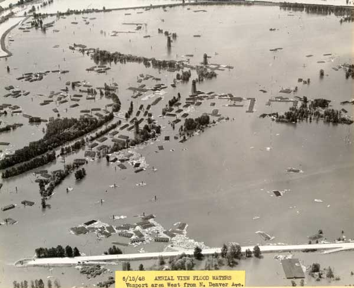
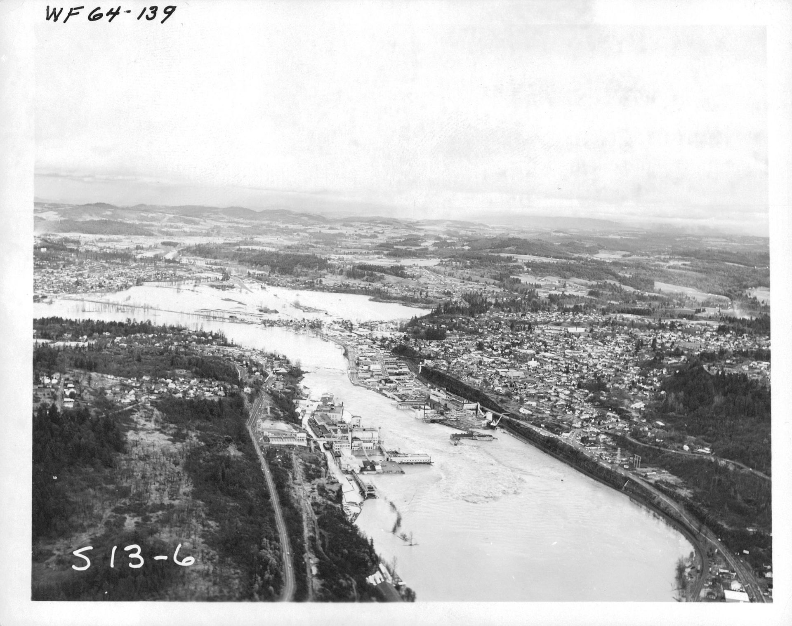
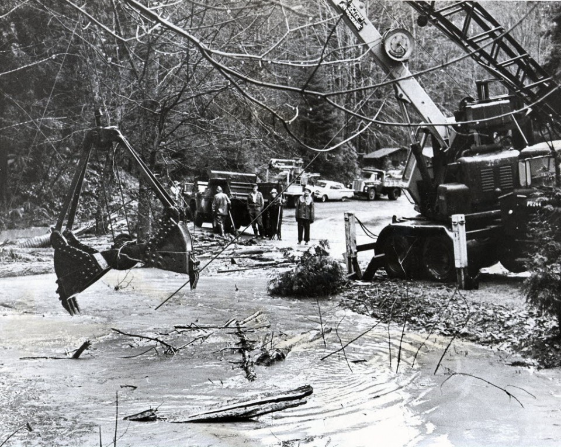
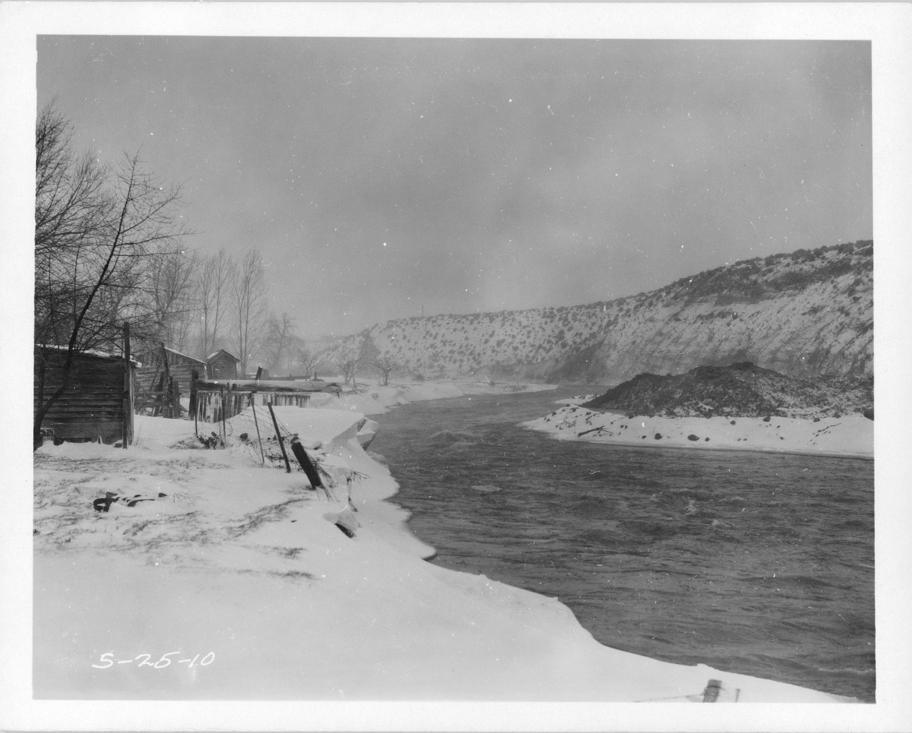
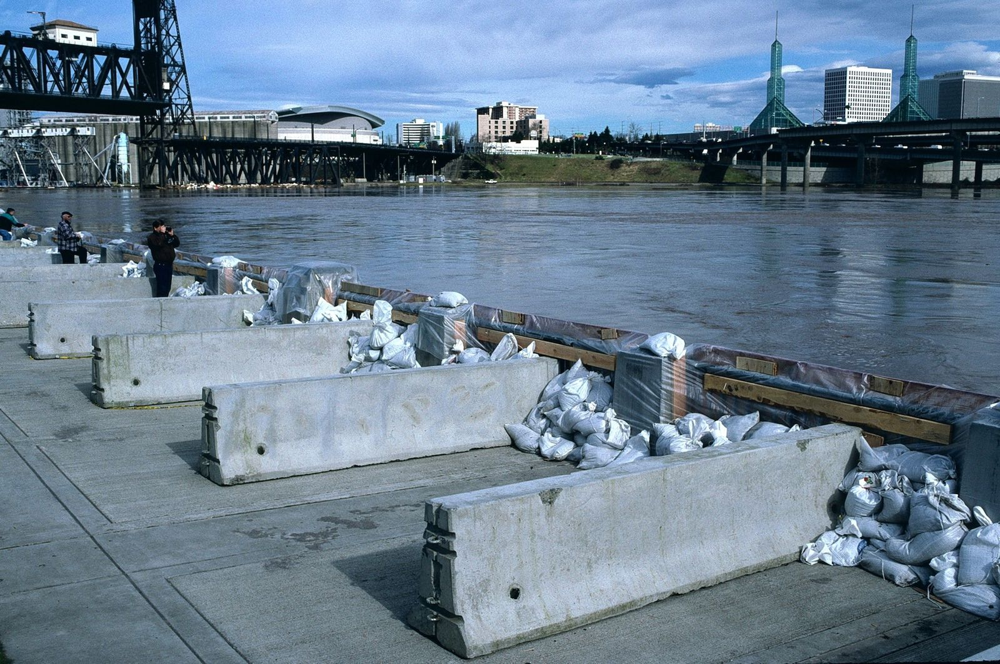
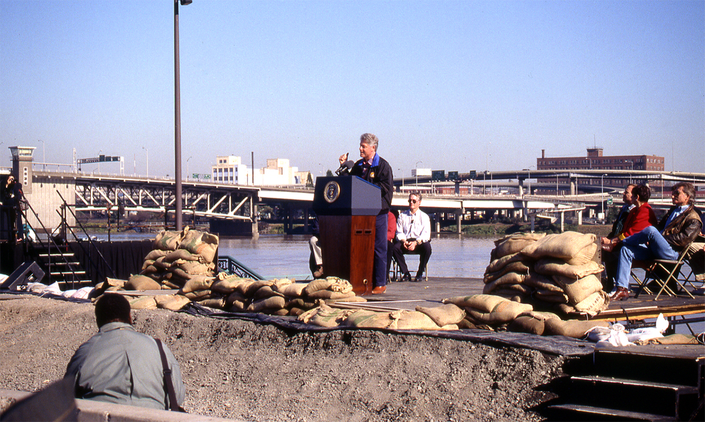
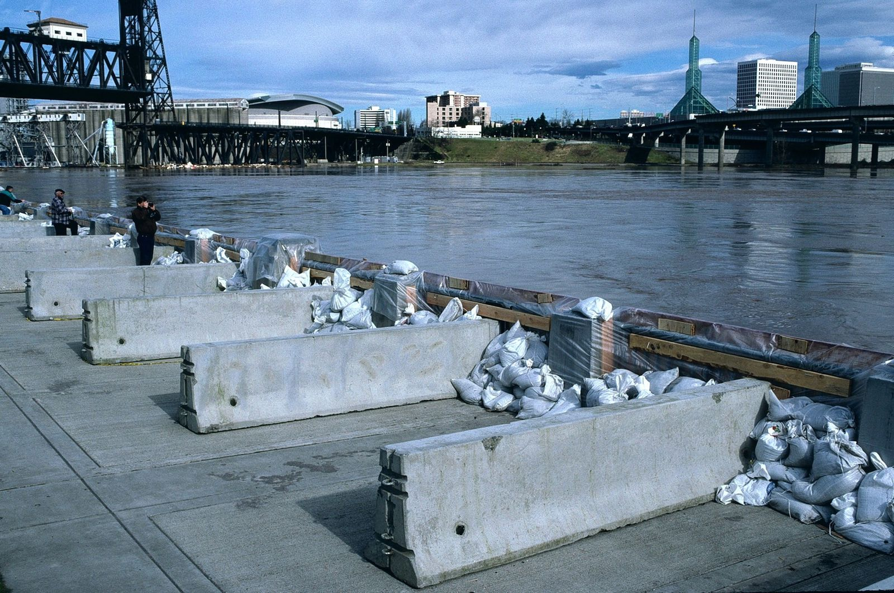
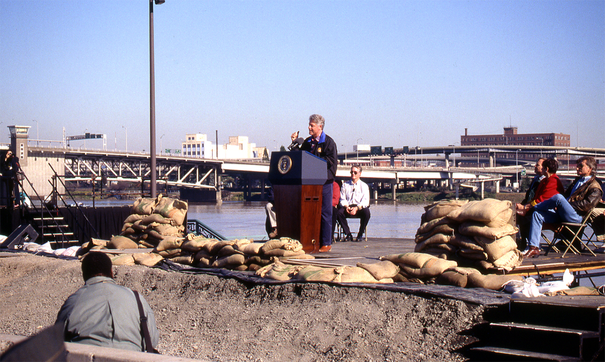

Flooding
The majority of Oregonians live in floodplains. Despite the increased management and regulation of rivers, flooding remains a risk throughout most of the state, particularly west of the Cascades. Understanding the impacts of historic floods and surveying at-risk areas can aid hazard planning and response.
"... and a morning dawned when there was not a sign of civilization left to tell where Champoeg had stood."
from The Oregonian, February 21, 1988, reprinted in Oregon Historical Quarterly
1861
Champoeg wasn't the only victim of the massive flooding that struck the Willamette Valley between November and December, 1861. The flood marked either the end, or the beginning of the end for Linn City, Santiam and Orleans, growing towns throughout the valley. The flood destroyed sawmills, foundries and farms, causing hundreds of millions of dollars of damage, by today's standards. USGS estimates place the depth of floodwater at its highest points (near Oregon City) 55 feet above base level, and at flows of approximately 590,000 cubic feet per second (cfs). Willamette discharge usually ranges between 30,000 and 100,000 cfs.
It is thought to the largest Willamette flood in the past 200 years.
{kind=link}
"REMEMBER. DIKES ARE SAFE AT PRESENT. YOU WILL BE WARNED IF NECESSARY. YOU WILL HAVE TIME TO LEAVE. DON'T GET EXCITED."
from a flyer provided by the Housing Authority of Portland on the morning of Memorial Day, 1948.
Vanport
For eight years in the 1940s, the city of Vanport was the second largest in Oregon. It also housed the state's largest African-American population. The city was constructed in the area between Portland and the Columbia River primarily to house shipyard workers.
The city was protected by an embankment that kept the river out of the city. On Memorial Day, 1948, the Columbia swelled 15 feet higher than its normal level. The flood punctured the embankment, spilling river water into the city. The flood displaced 18,000 people, many of them African-Americans.
The Vanport flood was one of the most catastrophic events in Oregon history. Not only did it permanently destroy the second-city in Oregon, but it altered the foundation of race relations in Portland (and Oregon) forever.

{kind=link}


"This is the worst disaster ever to hit the state."
Oregon Governor Mark Hatfield
1964
A cold spell that began on December 13th, 1964, brought over 10 inches of snow to most of Oregon, and froze the ground. The snowstorm was followed by a Pineapple Express storm that brought heavy rainfail and raised temperatures. Snow melted, but the ground remained frozen, creating an impermeable surface. Floodwaters were so high that they made Willamette Falls in Oregon City unrecognizable as a waterfall. While the damages were worst along the Willamette, flooding occurred on the Pacific Coast, along the Columbia, and throughout Northern California and Western Idaho.
It is considered by some to have been a 1,000 year flood.
  
{kind=link}
{kind=link}
{kind=link}
January 1996
1996 Oregonians were experiencing a wet winter. Saturated soil, bloated creeks, daily rainfall. It was nothing new.
However, a late January snowstorm and a subsequent Pineapple Express storm created the perfect conditions for Oregon's worst flood disaster since 1964.
February 1996
As waters began to rise, city workers in Portland began constructing what was known as Vera's Wall, named after Portland Mayor at-the-time Vera Katz. The Willamette ultimately rose 28 feet in Downtown Portland.
But the Willamette wasn't the only river affected. 26 rivers throughout Oregon experienced floodwaters, 26 counties were declared federal emergency zones, and over 20,000 people were evacuated from their homes.
 



{kind=link}
{kind=link}
Flood Risk
Over 900,000 Oregonians live in areas designated by FEMA as flood insurance zones. These are areas where there is a greater than 1% annual chance of flooding.
Living in these flood zones requires flood insurance.
Demographics and Risk
Marginalized groups are at greater risk from the effects of natural hazards. The Vanport flood exemplifies the damaging power flooding can have on at-risk communities.
As flood hazard planning continues to evolve, understanding the magnitude of risk for marginalized groups is important to ensure equitable preparation and response.